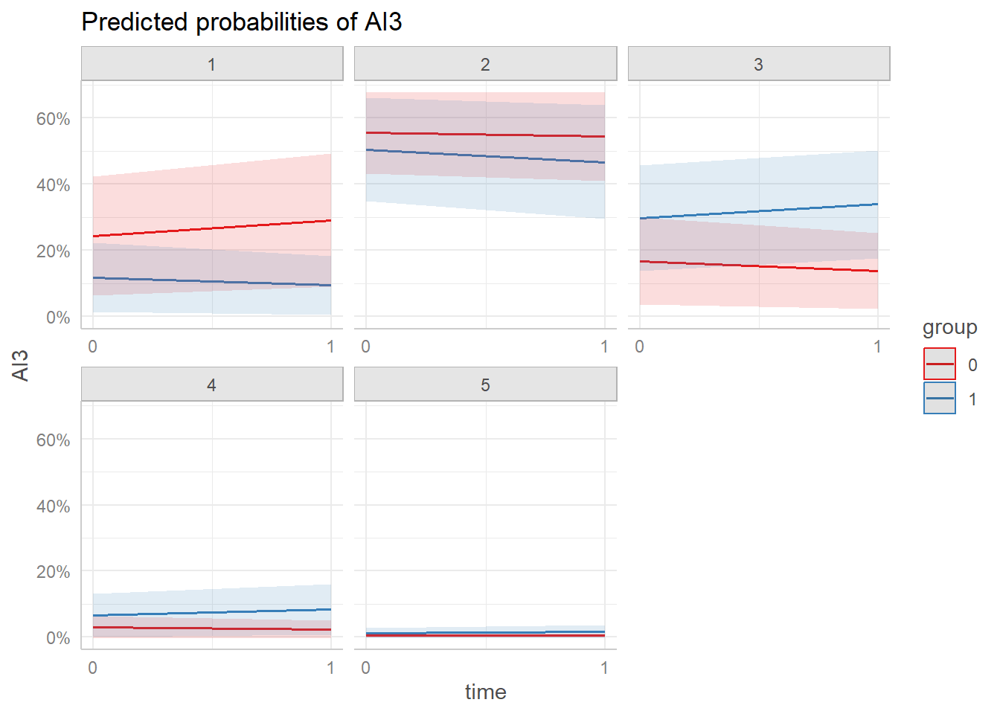
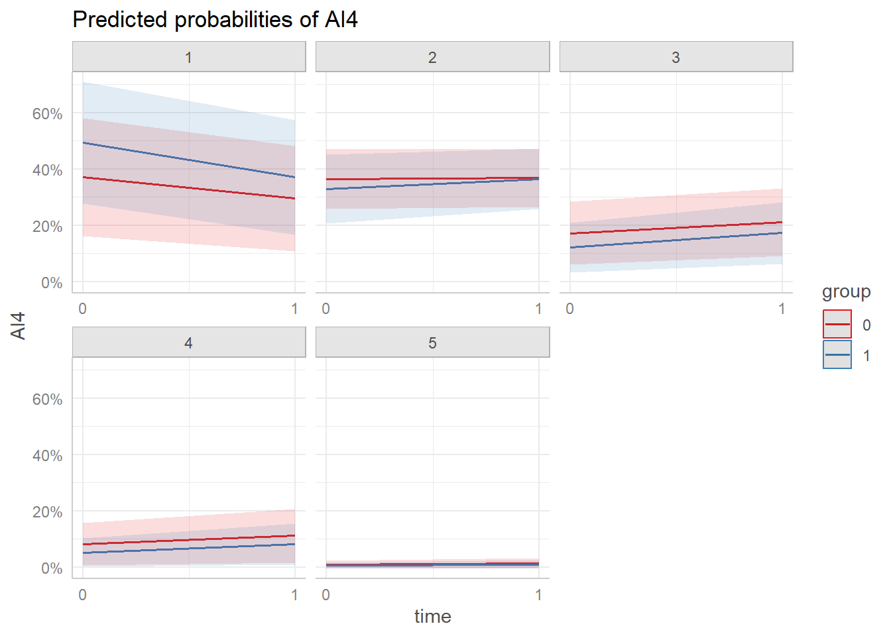

suppressPackageStartupMessages({
library(readxl)
library(gtsummary)
library(officer)
library(flextable)
library(ggeffects)
library(ggplot2)
library(dplyr)
library(ordinal)
library(texreg)
})
load("data/digital_distraction_data.RData")data$group <- as.factor(data$group)
demo_tbl <- data %>%
mutate(group = case_when(
group == "1" ~ "Treatment",
group == "0" ~ "Control"
)) %>%
rename(
grade = D1,
gender = D2,
non_academic = D3,
device = D4_multi,
most_distracted = D5,
distraction_source = D6,
teacher_authority = D7
) %>%
filter(time == "1") %>%
dplyr::select(group, period, grade, gender, non_academic, device, most_distracted, distraction_source, teacher_authority) %>%
tbl_summary(by = group,
percent = "column")
demo_tbl_ft <- as_flex_table(demo_tbl)demo_tbl_ft Characteristic | Control, N = 451 | Treatment, N = 461 |
|---|---|---|
period | ||
1st Period (7:50 -8:50 am) | 0 (0%) | 20 (43%) |
2nd Period (8:50 - 9:55 am) | 0 (0%) | 26 (57%) |
4th Period (11:25 - 12:30 pm) | 22 (49%) | 0 (0%) |
5th Period (12:55- 1:55 pm) | 23 (51%) | 0 (0%) |
grade | ||
10th | 11 (24%) | 10 (22%) |
11th | 4 (8.9%) | 5 (11%) |
12th | 1 (2.2%) | 0 (0%) |
8th | 16 (36%) | 9 (20%) |
9th | 13 (29%) | 22 (48%) |
gender | ||
Female | 24 (53%) | 27 (59%) |
Male | 21 (47%) | 18 (39%) |
Prefer not to say | 0 (0%) | 1 (2.2%) |
device | ||
Smartphone, | 1 (2.2%) | 0 (0%) |
Smartphone, Laptop (Model's) | 33 (73%) | 30 (65%) |
Smartphone, Laptop (Model's), AirPods | 0 (0%) | 2 (4.3%) |
Smartphone, Laptop (Model's), Game device (e.g., Nintendo) | 0 (0%) | 1 (2.2%) |
Smartphone, Laptop (Model's), Gaming, texting, Instagram | 0 (0%) | 1 (2.2%) |
Smartphone, Laptop (Model's), headphones | 0 (0%) | 1 (2.2%) |
Smartphone, Laptop (Model's), Tablet or iPad (personal) | 2 (4.4%) | 1 (2.2%) |
Smartphone, Smartwatch, Laptop (Model's) | 6 (13%) | 7 (15%) |
Smartphone, Smartwatch, Laptop (Model's), airpods | 0 (0%) | 1 (2.2%) |
Smartphone, Smartwatch, Laptop (Model's), AirPods | 1 (2.2%) | 0 (0%) |
Smartphone, Smartwatch, Laptop (Model's), Kindle | 1 (2.2%) | 0 (0%) |
Smartphone, Smartwatch, Laptop (Model's), Tablet or iPad (personal), Game device (e.g., Nintendo) | 1 (2.2%) | 0 (0%) |
Smartwatch, Laptop (Model's) | 0 (0%) | 2 (4.3%) |
most_distracted | ||
headphones | 0 (0%) | 1 (2.2%) |
Laptop (assigned by Model) | 4 (9.3%) | 4 (8.7%) |
Smartphone | 37 (86%) | 39 (85%) |
Smartwatch | 1 (2.3%) | 1 (2.2%) |
Tablet | 1 (2.3%) | 1 (2.2%) |
Unknown | 2 | 0 |
distraction_source | ||
all of the above | 0 (0%) | 1 (2.2%) |
1 (2.3%) | 0 (0%) | |
listenign to music and texting | 1 (2.3%) | 0 (0%) |
Listening to music | 13 (30%) | 11 (24%) |
Listening to music or researching something else on my computer | 1 (2.3%) | 0 (0%) |
Looking for jobs | 1 (2.3%) | 0 (0%) |
Playing games | 8 (19%) | 6 (13%) |
reading | 0 (0%) | 1 (2.2%) |
texts | 0 (0%) | 1 (2.2%) |
Using social media | 12 (28%) | 21 (46%) |
Watching videos | 6 (14%) | 4 (8.7%) |
Watching videos or playing games during free time, or when I’m done with my work ie, Spanish math science | 0 (0%) | 1 (2.2%) |
Unknown | 2 | 0 |
teacher_authority | ||
Agree | 10 (22%) | 14 (30%) |
Disagree | 11 (24%) | 13 (28%) |
Neutral | 14 (31%) | 16 (35%) |
Strongly agree | 1 (2.2%) | 0 (0%) |
Strongly disagree | 9 (20%) | 3 (6.5%) |
1n (%) | ||
Calculate Cronbach’s alpha (pre-test)
calculate_alpha <- function(data, prefix) {
category_cols <- grep(paste0("^", prefix), colnames(data), value = TRUE)
alpha_result <- alpha(data[, category_cols])
cat(paste("Cronbach's alpha for", prefix, ":", format(alpha_result$total$raw_alpha, digits = 2, nsmall = 2)), "\n")
return(alpha_result)
}
alpha_AI_pre <- data %>% filter(time == "0") %>% calculate_alpha("AI")
alpha_OV_pre <- data %>% filter(time == "0") %>% calculate_alpha("OV")
alpha_MT_pre <- data %>% filter(time == "0") %>% calculate_alpha("MT")
alpha_ER_pre <- data %>% filter(time == "0") %>% calculate_alpha("ER")alpha_AI_pre $total
raw_alpha std.alpha G6(smc) average_r S/N ase mean sd
0.7007393 0.7055215 0.7146837 0.3239437 2.395833 0.04964324 2.630769 0.7988453
median_r
0.396191
$alpha.drop
raw_alpha std.alpha G6(smc) average_r S/N alpha se var.r
AI1 0.6319402 0.6387125 0.6434197 0.3065041 1.767879 0.06361406 0.06604610
AI2 0.6315724 0.6367931 0.6281892 0.3047410 1.753252 0.06365375 0.05024463
AI3 0.5893706 0.5955855 0.5874475 0.2691008 1.472711 0.07078947 0.05685948
AI4 0.7882653 0.7884482 0.7608428 0.4823330 3.726975 0.03662430 0.01104271
AI5 0.5742298 0.5805133 0.5674860 0.2570394 1.383866 0.07352020 0.04731158
med.r
AI1 0.2896276
AI2 0.2756803
AI3 0.2720410
AI4 0.4523601
AI5 0.2756803
$item.stats
n raw.r std.r r.cor r.drop mean sd
AI1 91 0.7011792 0.7084939 0.6028976 0.5065359 3.340659 1.127631
AI2 91 0.7155864 0.7116163 0.6270481 0.5025235 3.065934 1.236502
AI3 91 0.7713978 0.7747327 0.7295083 0.6023498 2.318681 1.163129
AI4 91 0.4062342 0.3971131 0.1361904 0.1083765 2.010989 1.224695
AI5 91 0.7931783 0.7960926 0.7685770 0.6357137 2.417582 1.164912
$response.freq
1 2 3 4 5 miss
AI1 0.07692308 0.1428571 0.28571429 0.3516484 0.14285714 0
AI2 0.12087912 0.2307692 0.24175824 0.2747253 0.13186813 0
AI3 0.26373626 0.3846154 0.18681319 0.0989011 0.06593407 0
AI4 0.46153846 0.2857143 0.08791209 0.1098901 0.05494505 0
AI5 0.24175824 0.3406593 0.24175824 0.1098901 0.06593407 0
$keys
$keys[[1]]
[1] "AI1" "AI2" "AI3" "AI4" "AI5"
$scores
[1] 2.2 3.0 4.0 2.8 3.2 3.8 2.4 1.0 2.2 4.0 4.2 2.0 3.4 2.8 3.4 2.2 2.6 1.2 2.6
[20] 2.6 2.4 2.6 2.0 3.4 3.2 2.0 2.4 2.6 2.8 3.4 1.8 3.8 2.6 2.2 2.8 2.8 4.0 3.4
[39] 2.4 2.4 2.6 4.2 2.4 2.2 2.6 1.6 3.2 3.2 3.2 2.0 2.8 4.0 2.8 2.4 3.2 2.2 1.6
[58] 4.0 2.4 4.0 2.6 2.4 1.8 2.0 1.6 1.6 3.4 1.6 3.6 1.6 1.0 3.0 1.4 3.8 3.0 1.6
[77] 3.0 1.4 2.2 3.8 3.0 1.0 2.0 2.4 3.2 1.8 3.0 2.0 3.0 1.8 2.6
$nvar
[1] 5
$boot.ci
NULL
$boot
NULL
$feldt
$lower.ci
raw_alpha
0.5911794
$alpha
raw_alpha
0.7007393
$upper.ci
raw_alpha
0.7879796
$r.bar
raw_alpha
0.3189466
attr(,"class")
[1] "psych" "alpha.ci"
$Unidim
$Unidim$Unidim
[1] 0.601432
$var.r
[1] 0.05025876
$Fit
$Fit$Fit.off
[1] 0.9099458
$call
alpha(x = data[, category_cols])
$title
NULL
attr(,"class")
[1] "psych" "alpha"alpha_OV_pre $total
raw_alpha std.alpha G6(smc) average_r S/N ase mean sd
0.4550996 0.4694884 0.3719063 0.2277939 0.884973 0.09593055 2.043956 0.8332723
median_r
0.2297613
$alpha.drop
raw_alpha std.alpha G6(smc) average_r S/N alpha se var.r med.r
OV1 0.3845599 0.4035702 0.2527954 0.2527954 0.6766432 0.1210394 NA 0.2527954
OV2 0.3113481 0.3344782 0.2008248 0.2008248 0.5025803 0.1321200 NA 0.2008248
OV3 0.3729423 0.3736681 0.2297613 0.2297613 0.5965976 0.1311357 NA 0.2297613
$item.stats
n raw.r std.r r.cor r.drop mean sd
OV1 91 0.7404992 0.6845957 0.3963852 0.2727585 2.329670 1.3748127
OV2 91 0.7309811 0.7094659 0.4550060 0.3040211 2.417582 1.2829301
OV3 91 0.6017833 0.6956186 0.4229819 0.2879924 1.384615 0.9039325
$response.freq
1 2 3 4 5 miss
OV1 0.3956044 0.2197802 0.13186813 0.16483516 0.08791209 0
OV2 0.3186813 0.2527473 0.18681319 0.17582418 0.06593407 0
OV3 0.7912088 0.1208791 0.02197802 0.04395604 0.02197802 0
$keys
$keys[[1]]
[1] "OV1" "OV2" "OV3"
$scores
[1] 2.000000 1.666667 3.000000 1.666667 2.666667 2.333333 2.333333 1.000000
[9] 1.333333 3.333333 1.666667 1.000000 1.666667 1.333333 2.666667 1.333333
[17] 2.000000 1.666667 2.333333 1.333333 1.666667 3.333333 1.000000 2.333333
[25] 2.000000 2.333333 1.333333 1.666667 2.000000 3.000000 2.000000 3.000000
[33] 3.333333 1.333333 1.666667 2.000000 1.000000 3.666667 1.000000 2.666667
[41] 2.000000 2.333333 3.000000 2.333333 3.000000 2.333333 2.666667 2.333333
[49] 2.666667 2.000000 4.333333 2.000000 1.333333 2.666667 2.666667 1.333333
[57] 2.333333 2.333333 1.333333 4.000000 1.666667 1.000000 1.000000 1.000000
[65] 1.333333 1.000000 1.666667 2.000000 2.666667 2.333333 1.000000 1.000000
[73] 1.000000 3.333333 4.000000 1.000000 3.000000 1.000000 1.000000 1.000000
[81] 2.000000 1.000000 2.333333 2.000000 2.333333 2.000000 3.333333 1.666667
[89] 3.666667 2.000000 1.000000
$nvar
[1] 3
$boot.ci
NULL
$boot
NULL
$feldt
$lower.ci
raw_alpha
0.227695
$alpha
raw_alpha
0.4550996
$upper.ci
raw_alpha
0.6238399
$r.bar
raw_alpha
0.2177718
attr(,"class")
[1] "psych" "alpha.ci"
$Unidim
$Unidim$Unidim
[1] 0.4593871
$var.r
[1] 0.0006781388
$Fit
$Fit$Fit.off
[1] 0.9992424
$call
alpha(x = data[, category_cols])
$title
NULL
attr(,"class")
[1] "psych" "alpha"alpha_MT_pre $total
raw_alpha std.alpha G6(smc) average_r S/N ase mean sd
0.6250883 0.62397 0.5706649 0.2932066 1.659362 0.06390211 2.884615 0.8821594
median_r
0.3279171
$alpha.drop
raw_alpha std.alpha G6(smc) average_r S/N alpha se var.r
MT1 0.5313238 0.5276347 0.4396197 0.2713151 1.117006 0.08417278 0.009639658
MT2 0.6228515 0.6266257 0.5308463 0.3587384 1.678278 0.06860078 0.002325446
MT3 0.5053097 0.5058684 0.4276034 0.2544273 1.023752 0.09024874 0.019258383
MT4 0.5513642 0.5486407 0.4568466 0.2883457 1.215530 0.08061768 0.007020558
med.r
MT1 0.3225972
MT2 0.3401237
MT3 0.1916765
MT4 0.3332369
$item.stats
n raw.r std.r r.cor r.drop mean sd
MT1 91 0.7005378 0.7094476 0.5639761 0.4389945 2.648352 1.241626
MT2 91 0.6102944 0.6137979 0.3870501 0.3065177 3.307692 1.253372
MT3 91 0.7475089 0.7279245 0.5877093 0.4682359 2.626374 1.395615
MT4 91 0.6824828 0.6908144 0.5326244 0.4107203 2.956044 1.246436
$response.freq
1 2 3 4 5 miss
MT1 0.1978022 0.3076923 0.2417582 0.1538462 0.0989011 0
MT2 0.1318681 0.0989011 0.2747253 0.3186813 0.1758242 0
MT3 0.2747253 0.2527473 0.1868132 0.1428571 0.1428571 0
MT4 0.1538462 0.1978022 0.3186813 0.1978022 0.1318681 0
$keys
$keys[[1]]
[1] "MT1" "MT2" "MT3" "MT4"
$scores
[1] 4.00 2.25 2.75 2.25 2.25 2.75 2.00 3.25 1.75 4.00 5.00 2.75 2.25 3.00 1.75
[16] 1.75 3.00 3.50 3.25 2.75 2.75 2.50 2.75 2.75 3.75 4.75 3.25 3.25 2.00 3.25
[31] 3.00 3.50 5.00 2.50 3.25 2.75 2.50 2.50 2.75 2.50 4.25 2.00 3.25 2.75 2.00
[46] 2.25 3.50 2.50 1.25 4.00 3.00 3.75 2.50 2.75 3.00 3.25 3.50 3.75 1.50 2.75
[61] 3.00 3.25 3.00 2.50 2.00 1.75 2.00 5.00 2.25 1.25 3.00 3.75 2.00 3.00 4.50
[76] 2.25 5.00 1.00 2.25 3.25 2.75 2.00 2.25 2.25 3.50 3.00 2.25 3.75 2.75 2.00
[91] 5.00
$nvar
[1] 4
$boot.ci
NULL
$boot
NULL
$feldt
$lower.ci
raw_alpha
0.4813519
$alpha
raw_alpha
0.6250883
$upper.ci
raw_alpha
0.7367509
$r.bar
raw_alpha
0.2941958
attr(,"class")
[1] "psych" "alpha.ci"
$Unidim
$Unidim$Unidim
[1] 0.5916509
$var.r
[1] 0.009539144
$Fit
$Fit$Fit.off
[1] 0.9843366
$call
alpha(x = data[, category_cols])
$title
NULL
attr(,"class")
[1] "psych" "alpha"alpha_ER_pre$total
raw_alpha std.alpha G6(smc) average_r S/N ase mean sd
0.8329328 0.8337655 0.8164134 0.5563245 5.015599 0.02886274 3.118132 1.135501
median_r
0.5706812
$alpha.drop
raw_alpha std.alpha G6(smc) average_r S/N alpha se var.r
ER1 0.7778981 0.7780116 0.7048772 0.5387979 3.504741 0.04025298 0.003258835
ER2 0.7356576 0.7382793 0.6680246 0.4846129 2.820867 0.04853909 0.011828851
ER3 0.7917869 0.7924358 0.7647548 0.5599746 3.817787 0.03855141 0.032732878
ER4 0.8423310 0.8432073 0.7922594 0.6419128 5.377847 0.02872920 0.007665867
med.r
ER1 0.5562174
ER2 0.4750313
ER3 0.5562174
ER4 0.5978471
$item.stats
n raw.r std.r r.cor r.drop mean sd
ER1 91 0.8259012 0.8329419 0.7861917 0.6898564 3.241758 1.310985
ER2 91 0.8860054 0.8826926 0.8569221 0.7727025 3.000000 1.460593
ER3 91 0.8086009 0.8134984 0.7105151 0.6556707 3.164835 1.352066
ER4 91 0.7464053 0.7382658 0.5986486 0.5429128 3.065934 1.436061
$response.freq
1 2 3 4 5 miss
ER1 0.1538462 0.1098901 0.2637363 0.2857143 0.1868132 0
ER2 0.2197802 0.1868132 0.1758242 0.2087912 0.2087912 0
ER3 0.1648352 0.1758242 0.1538462 0.3406593 0.1648352 0
ER4 0.2197802 0.1318681 0.2087912 0.2417582 0.1978022 0
$keys
$keys[[1]]
[1] "ER1" "ER2" "ER3" "ER4"
$scores
[1] 2.00 3.50 4.50 4.25 4.75 5.00 3.25 1.00 3.00 3.50 4.00 4.00 3.50 2.25 4.50
[16] 2.25 1.00 4.00 4.00 3.75 4.25 2.50 2.50 2.75 5.00 4.75 1.75 4.00 4.00 2.75
[31] 3.50 3.00 4.25 2.50 1.75 3.50 4.75 2.50 4.25 3.50 2.50 2.00 2.25 3.00 2.00
[46] 2.50 3.75 2.25 4.25 2.00 5.00 3.25 3.75 4.25 4.50 2.00 2.25 4.25 4.75 3.50
[61] 2.25 4.00 2.25 2.75 1.25 1.75 1.00 2.00 3.00 2.00 1.00 4.00 1.00 4.25 4.75
[76] 2.00 4.25 1.00 3.25 4.75 3.75 1.00 3.00 1.75 3.25 2.75 4.00 2.75 3.75 2.00
[91] 3.50
$nvar
[1] 4
$boot.ci
NULL
$boot
NULL
$feldt
$lower.ci
raw_alpha
0.7688814
$alpha
raw_alpha
0.8329328
$upper.ci
raw_alpha
0.8826916
$r.bar
raw_alpha
0.5548441
attr(,"class")
[1] "psych" "alpha.ci"
$Unidim
$Unidim$Unidim
[1] 0.8808732
$var.r
[1] 0.01493381
$Fit
$Fit$Fit.off
[1] 0.9405386
$call
alpha(x = data[, category_cols])
$title
NULL
attr(,"class")
[1] "psych" "alpha"Calculate Cronbach’s alpha (post-test)
alpha_AI_post <- data %>% filter(time == "1") %>% calculate_alpha("AI")
alpha_OV_post <- data %>% filter(time == "1") %>% calculate_alpha("OV")
alpha_MT_post <- data %>% filter(time == "1") %>% calculate_alpha("MT")
alpha_ER_post <- data %>% filter(time == "1") %>% calculate_alpha("ER")alpha_AI_post $total
raw_alpha std.alpha G6(smc) average_r S/N ase mean sd
0.8189736 0.8238909 0.8189305 0.4833803 4.678298 0.0304447 2.58022 0.8844609
median_r
0.5097317
$alpha.drop
raw_alpha std.alpha G6(smc) average_r S/N alpha se var.r
AI1 0.7871535 0.7943541 0.7704375 0.4912707 3.862728 0.03729901 0.021602980
AI2 0.7624144 0.7646553 0.7250809 0.4482064 3.249087 0.04071736 0.009270115
AI3 0.7485148 0.7563435 0.7474140 0.4369479 3.104139 0.04391924 0.020367296
AI4 0.8285292 0.8320583 0.8092108 0.5532945 4.954446 0.02978235 0.012100221
AI5 0.7871089 0.7916681 0.7618668 0.4871817 3.800034 0.03683560 0.016267644
med.r
AI1 0.5097317
AI2 0.4322847
AI3 0.3835531
AI4 0.5693059
AI5 0.5098358
$item.stats
n raw.r std.r r.cor r.drop mean sd
AI1 91 0.7633982 0.7536046 0.6727492 0.6001909 3.054945 1.232546
AI2 91 0.8059081 0.8210713 0.7920329 0.6917022 2.868132 1.056291
AI3 91 0.8378476 0.8387094 0.7919305 0.7251175 2.318681 1.163129
AI4 91 0.6762341 0.6564351 0.5166053 0.4684373 2.219780 1.263172
AI5 91 0.7440020 0.7600107 0.6924792 0.5994654 2.439560 1.077124
$response.freq
1 2 3 4 5 miss
AI1 0.1428571 0.1758242 0.2857143 0.2747253 0.12087912 0
AI2 0.0989011 0.2637363 0.3736264 0.1978022 0.06593407 0
AI3 0.3186813 0.2527473 0.2527473 0.1428571 0.03296703 0
AI4 0.4175824 0.1868132 0.1978022 0.1538462 0.04395604 0
AI5 0.2307692 0.2967033 0.2967033 0.1538462 0.02197802 0
$keys
$keys[[1]]
[1] "AI1" "AI2" "AI3" "AI4" "AI5"
$scores
[1] 2.0 3.4 2.8 1.8 3.2 3.8 2.8 1.0 1.8 4.4 3.2 1.2 4.2 2.0 4.2 2.6 1.4 1.8 2.8
[20] 2.4 2.4 2.6 3.4 3.8 3.4 1.6 3.0 1.8 2.6 2.0 2.0 3.6 2.6 1.6 3.2 2.8 3.0 3.2
[39] 2.4 3.6 2.8 2.8 3.6 1.8 4.2 1.2 4.2 2.6 3.4 2.2 3.6 2.6 3.0 3.2 3.2 2.0 3.0
[58] 3.4 1.8 3.8 3.0 1.4 1.6 2.0 3.0 1.4 3.0 4.0 2.4 1.4 1.0 1.8 1.8 2.2 3.2 1.0
[77] 3.2 3.0 2.2 1.8 2.8 1.4 1.8 1.8 2.6 1.4 4.0 1.2 3.6 2.4 1.6
$nvar
[1] 5
$boot.ci
NULL
$boot
NULL
$feldt
$lower.ci
raw_alpha
0.7526995
$alpha
raw_alpha
0.8189736
$upper.ci
raw_alpha
0.8717463
$r.bar
raw_alpha
0.4750136
attr(,"class")
[1] "psych" "alpha.ci"
$Unidim
$Unidim$Unidim
[1] 0.8362129
$var.r
[1] 0.01659958
$Fit
$Fit$Fit.off
[1] 0.9469917
$call
alpha(x = data[, category_cols])
$title
NULL
attr(,"class")
[1] "psych" "alpha"alpha_OV_post $total
raw_alpha std.alpha G6(smc) average_r S/N ase mean sd
0.5844065 0.5829501 0.4945632 0.3178399 1.397794 0.07038746 2.142857 0.8376081
median_r
0.2901835
$alpha.drop
raw_alpha std.alpha G6(smc) average_r S/N alpha se var.r
OV1 0.3584406 0.3779795 0.2330301 0.2330301 0.6076642 0.12559692 NA
OV2 0.4204795 0.4498329 0.2901835 0.2901835 0.8176296 0.11065846 NA
OV3 0.6010227 0.6016979 0.4303061 0.4303061 1.5106570 0.08348378 NA
med.r
OV1 0.2330301
OV2 0.2901835
OV3 0.4303061
$item.stats
n raw.r std.r r.cor r.drop mean sd
OV1 91 0.8185587 0.7766803 0.6058350 0.4701615 2.373626 1.2879644
OV2 91 0.7832459 0.7508795 0.5528672 0.4333329 2.626374 1.2169940
OV3 91 0.5979314 0.6876240 0.3991300 0.3102574 1.428571 0.8451543
$response.freq
1 2 3 4 5 miss
OV1 0.3516484 0.1978022 0.2527473 0.12087912 0.07692308 0
OV2 0.2417582 0.1978022 0.3186813 0.17582418 0.06593407 0
OV3 0.7582418 0.0989011 0.0989011 0.04395604 0.00000000 0
$keys
$keys[[1]]
[1] "OV1" "OV2" "OV3"
$scores
[1] 2.000000 1.666667 2.666667 1.666667 3.333333 2.333333 2.666667 1.000000
[9] 1.666667 4.666667 1.666667 1.000000 2.333333 1.000000 2.666667 2.333333
[17] 1.333333 1.333333 2.666667 3.333333 1.000000 3.000000 2.666667 2.333333
[25] 2.666667 1.666667 3.000000 1.666667 2.333333 2.666667 2.333333 2.666667
[33] 3.333333 2.333333 1.666667 1.666667 1.000000 3.666667 1.333333 2.333333
[41] 2.333333 2.333333 3.000000 1.666667 3.000000 2.666667 2.333333 1.666667
[49] 2.666667 1.333333 3.666667 2.666667 2.000000 3.000000 1.666667 1.333333
[57] 3.000000 2.000000 1.666667 3.000000 3.000000 1.333333 1.333333 1.000000
[65] 1.333333 1.333333 3.000000 2.333333 2.333333 1.333333 1.000000 1.000000
[73] 2.000000 2.333333 3.000000 1.000000 3.000000 3.333333 1.666667 1.000000
[81] 2.666667 1.000000 3.000000 1.000000 2.000000 1.000000 3.666667 1.333333
[89] 3.666667 1.000000 1.333333
$nvar
[1] 3
$boot.ci
NULL
$boot
NULL
$feldt
$lower.ci
raw_alpha
0.4109658
$alpha
raw_alpha
0.5844065
$upper.ci
raw_alpha
0.7131041
$r.bar
raw_alpha
0.3191408
attr(,"class")
[1] "psych" "alpha.ci"
$Unidim
$Unidim$Unidim
[1] 0.6059491
$var.r
[1] 0.01030311
$Fit
$Fit$Fit.off
[1] 0.9854541
$call
alpha(x = data[, category_cols])
$title
NULL
attr(,"class")
[1] "psych" "alpha"alpha_MT_post $total
raw_alpha std.alpha G6(smc) average_r S/N ase mean sd
0.5853107 0.5921341 0.5518665 0.2662955 1.451786 0.07128018 2.986264 0.7882493
median_r
0.3062532
$alpha.drop
raw_alpha std.alpha G6(smc) average_r S/N alpha se var.r
MT1 0.6309793 0.6328970 0.5354696 0.3649492 1.7240314 0.06644564 0.0005762804
MT2 0.5482736 0.5533003 0.4609678 0.2922259 1.2386405 0.08175556 0.0072290104
MT3 0.3926898 0.4114449 0.3542467 0.1889867 0.6990762 0.11230935 0.0273834657
MT4 0.4572305 0.4569141 0.4073267 0.2190203 0.8413292 0.09890342 0.0348162079
med.r
MT1 0.3717723
MT2 0.2742359
MT3 0.2176369
MT4 0.2742359
$item.stats
n raw.r std.r r.cor r.drop mean sd
MT1 91 0.5819017 0.5602806 0.3058719 0.2208643 2.615385 1.254053
MT2 91 0.6344219 0.6416129 0.4611646 0.3219279 3.384615 1.171601
MT3 91 0.7681940 0.7570735 0.6474709 0.5052880 2.868132 1.240150
MT4 91 0.6953431 0.7234845 0.5782246 0.4514511 3.076923 1.045953
$response.freq
1 2 3 4 5 miss
MT1 0.23076923 0.2747253 0.2197802 0.1978022 0.07692308 0
MT2 0.07692308 0.1538462 0.2527473 0.3406593 0.17582418 0
MT3 0.20879121 0.1318681 0.3186813 0.2637363 0.07692308 0
MT4 0.05494505 0.2527473 0.3406593 0.2637363 0.08791209 0
$keys
$keys[[1]]
[1] "MT1" "MT2" "MT3" "MT4"
$scores
[1] 4.00 2.50 2.75 3.00 2.00 3.00 1.75 4.00 2.50 4.00 5.00 3.25 3.00 2.00 2.00
[16] 2.75 3.00 3.75 3.75 2.50 2.75 3.00 4.00 2.25 3.50 5.00 3.00 2.25 4.00 2.75
[31] 3.50 3.25 4.25 2.00 2.50 2.00 1.25 3.25 3.50 2.25 3.50 4.00 3.75 3.00 2.75
[46] 2.50 3.50 2.75 1.75 3.50 3.00 4.00 1.75 2.75 2.00 3.00 3.00 3.00 1.25 3.00
[61] 3.00 2.00 3.25 2.75 2.50 2.75 3.00 5.00 3.00 3.75 3.00 2.50 2.50 2.25 4.00
[76] 1.75 4.25 3.00 1.50 2.75 3.50 3.00 3.50 2.50 3.50 3.00 2.50 4.00 3.00 3.00
[91] 3.25
$nvar
[1] 4
$boot.ci
NULL
$boot
NULL
$feldt
$lower.ci
raw_alpha
0.4263242
$alpha
raw_alpha
0.5853107
$upper.ci
raw_alpha
0.7088205
$r.bar
raw_alpha
0.2608258
attr(,"class")
[1] "psych" "alpha.ci"
$Unidim
$Unidim$Unidim
[1] 0.5345289
$var.r
[1] 0.01958595
$Fit
$Fit$Fit.off
[1] 0.9705728
$call
alpha(x = data[, category_cols])
$title
NULL
attr(,"class")
[1] "psych" "alpha"alpha_ER_post $total
raw_alpha std.alpha G6(smc) average_r S/N ase mean sd
0.8025247 0.8040198 0.7733011 0.5063287 4.102557 0.0340342 3.148352 1.064567
median_r
0.5225247
$alpha.drop
raw_alpha std.alpha G6(smc) average_r S/N alpha se var.r
ER1 0.7978123 0.7976259 0.7310315 0.5678070 3.941344 0.03619032 0.004722207
ER2 0.7164058 0.7202751 0.6482327 0.4618777 2.574941 0.05216328 0.011750750
ER3 0.7298029 0.7288911 0.6689060 0.4726253 2.688555 0.04935491 0.021907107
ER4 0.7625715 0.7668655 0.6935602 0.5230046 3.289369 0.04337069 0.004767668
med.r
ER1 0.5750468
ER2 0.4957555
ER3 0.4446731
ER4 0.5492939
$item.stats
n raw.r std.r r.cor r.drop mean sd
ER1 91 0.7362969 0.7354624 0.5950718 0.5231269 3.098901 1.366707
ER2 91 0.8435412 0.8355763 0.7726852 0.6870338 2.978022 1.429670
ER3 91 0.8147421 0.8254188 0.7446658 0.6710567 3.175824 1.234625
ER4 91 0.7789904 0.7778052 0.6789459 0.5960320 3.340659 1.335164
$response.freq
1 2 3 4 5 miss
ER1 0.1758242 0.1648352 0.2307692 0.2417582 0.1868132 0
ER2 0.2417582 0.1208791 0.2307692 0.2307692 0.1758242 0
ER3 0.1318681 0.1538462 0.2527473 0.3296703 0.1318681 0
ER4 0.1428571 0.1098901 0.2417582 0.2747253 0.2307692 0
$keys
$keys[[1]]
[1] "ER1" "ER2" "ER3" "ER4"
$scores
[1] 2.00 3.00 4.25 3.25 4.50 4.75 2.25 1.00 3.50 5.00 5.00 3.00 2.75 2.75 4.75
[16] 2.50 1.75 4.25 4.00 2.75 2.75 3.00 2.75 4.25 4.75 2.75 2.00 4.00 4.00 2.25
[31] 4.75 4.25 3.75 2.25 1.75 3.25 3.50 3.75 4.50 3.25 1.50 3.00 3.00 3.25 4.00
[46] 2.00 5.00 2.00 4.00 1.50 4.50 2.75 4.00 4.50 4.25 2.25 3.00 3.50 1.50 3.00
[61] 2.75 2.50 2.25 2.75 2.75 1.00 3.00 1.75 3.25 2.75 3.00 2.75 1.25 3.00 4.25
[76] 3.25 4.75 3.00 4.00 3.25 3.75 1.75 2.75 2.75 4.00 2.00 5.00 1.00 3.25 1.25
[91] 4.75
$nvar
[1] 4
$boot.ci
NULL
$boot
NULL
$feldt
$lower.ci
raw_alpha
0.7268151
$alpha
raw_alpha
0.8025247
$upper.ci
raw_alpha
0.8613401
$r.bar
raw_alpha
0.5039636
attr(,"class")
[1] "psych" "alpha.ci"
$Unidim
$Unidim$Unidim
[1] 0.8493019
$var.r
[1] 0.01078039
$Fit
$Fit$Fit.off
[1] 0.9644486
$call
alpha(x = data[, category_cols])
$title
NULL
attr(,"class")
[1] "psych" "alpha"data <- data %>% mutate(across(AI1:ER4, as.factor))Attention Impulsiveness (AI)
AI1
main.AI1 <- clmm(AI1 ~ group + time + group:time +
(1 | student), data = data, Hess=TRUE, nAGQ=7)sum <- summary(main.AI1)
cf <- sum$coefficients %>% as.data.frame()
cf[1:4, 1] <- cf[1:4, 1]*-1
cf[1:4, 3] <- cf[1:4, 3]*-1
rownames(cf)[1:4] <- c("rating > 4", "rating > 3", "rating > 2", "rating > 1")
cf %>% mutate(odd_ratio = exp(Estimate)) %>%
mutate_if(is.numeric, ~ round(., 3)) Estimate Std. Error z value Pr(>|z|) odd_ratio
rating > 4 2.927 0.497 5.893 0.000 18.663
rating > 3 1.376 0.411 3.344 0.001 3.958
rating > 2 -0.458 0.391 -1.170 0.242 0.633
rating > 1 -2.755 0.477 -5.777 0.000 0.064
group1 0.679 0.524 1.295 0.195 1.972
time -0.162 0.397 -0.409 0.682 0.850
group1:time -0.791 0.566 -1.396 0.163 0.453ggpredict(main.AI1, terms = c("time", "group")) %>% plot() +
scale_x_continuous(breaks = c(0, 1)) 
AI2
main.AI2 <- clmm(AI2 ~ group + time + group:time +
(1 | student), data = data, Hess=TRUE, nAGQ=7)sum <- summary(main.AI2)
cf <- sum$coefficients %>% as.data.frame()
cf[1:4, 1] <- cf[1:4, 1]*-1
cf[1:4, 3] <- cf[1:4, 3]*-1
rownames(cf)[1:4] <- c("rating > 4", "rating > 3", "rating > 2", "rating > 1")
cf %>% mutate(odd_ratio = exp(Estimate)) %>%
mutate_if(is.numeric, ~ round(., 3)) Estimate Std. Error z value Pr(>|z|) odd_ratio
rating > 4 2.582 0.505 5.117 0.000 13.222
rating > 3 0.204 0.421 0.485 0.628 1.227
rating > 2 -1.894 0.465 -4.072 0.000 0.150
rating > 1 -4.091 0.582 -7.025 0.000 0.017
group1 1.860 0.590 3.154 0.002 6.425
time 0.176 0.405 0.434 0.664 1.193
group1:time -1.235 0.583 -2.118 0.034 0.291ggpredict(main.AI2, terms = c("time", "group")) %>% plot() +
scale_x_continuous(breaks = c(0, 1)) 
AI3
main.AI3 <- clmm(AI3 ~ group + time + group:time +
(1 | student), data = data, Hess=TRUE, nAGQ=7)sum <- summary(main.AI3)
cf <- sum$coefficients %>% as.data.frame()
cf[1:4, 1] <- cf[1:4, 1]*-1
cf[1:4, 3] <- cf[1:4, 3]*-1
rownames(cf)[1:4] <- c("rating > 4", "rating > 3", "rating > 2", "rating > 1")
cf %>% mutate(odd_ratio = exp(Estimate)) %>%
mutate_if(is.numeric, ~ round(., 3)) Estimate Std. Error z value Pr(>|z|) odd_ratio
rating > 4 1.138 0.500 2.276 0.023 3.121
rating > 3 -1.375 0.520 -2.644 0.008 0.253
rating > 2 -3.327 0.608 -5.467 0.000 0.036
rating > 1 -5.245 0.738 -7.104 0.000 0.005
group1 0.871 0.656 1.328 0.184 2.389
time -0.249 0.444 -0.560 0.575 0.780
group1:time 0.508 0.605 0.840 0.401 1.662ggpredict(main.AI3, terms = c("time", "group")) %>% plot() +
scale_x_continuous(breaks = c(0, 1)) 
AI4
main.AI4 <- clmm(AI4 ~ group + time + group:time +
(1 | student), data = data, Hess=TRUE, nAGQ=7)sum <- summary(main.AI4)
cf <- sum$coefficients %>% as.data.frame()
cf[1:4, 1] <- cf[1:4, 1]*-1
cf[1:4, 3] <- cf[1:4, 3]*-1
rownames(cf)[1:4] <- c("rating > 4", "rating > 3", "rating > 2", "rating > 1")
cf %>% mutate(odd_ratio = exp(Estimate)) %>%
mutate_if(is.numeric, ~ round(., 3)) Estimate Std. Error z value Pr(>|z|) odd_ratio
rating > 4 0.527 0.457 1.152 0.249 1.694
rating > 3 -1.025 0.471 -2.176 0.030 0.359
rating > 2 -2.287 0.521 -4.389 0.000 0.102
rating > 1 -4.603 0.744 -6.184 0.000 0.010
group1 -0.497 0.621 -0.801 0.423 0.608
time 0.346 0.440 0.786 0.432 1.413
group1:time 0.156 0.611 0.255 0.798 1.169ggpredict(main.AI4, terms = c("time", "group")) %>% plot() +
scale_x_continuous(breaks = c(0, 1)) AI5
main.AI5 <- clmm(AI5 ~ group + time + group:time +
(1 | student), data = data, Hess=TRUE, nAGQ=7)sum <- summary(main.AI5)
cf <- sum$coefficients %>% as.data.frame()
cf[1:4, 1] <- cf[1:4, 1]*-1
cf[1:4, 3] <- cf[1:4, 3]*-1
rownames(cf)[1:4] <- c("rating > 4", "rating > 3", "rating > 2", "rating > 1")
cf %>% mutate(odd_ratio = exp(Estimate)) %>%
mutate_if(is.numeric, ~ round(., 3)) Estimate Std. Error z value Pr(>|z|) odd_ratio
rating > 4 1.187 0.413 2.877 0.004 3.276
rating > 3 -0.861 0.413 -2.086 0.037 0.423
rating > 2 -2.706 0.488 -5.541 0.000 0.067
rating > 1 -4.593 0.638 -7.196 0.000 0.010
group1 0.840 0.538 1.561 0.118 2.317
time 0.495 0.421 1.176 0.240 1.641
group1:time -0.716 0.577 -1.241 0.214 0.489ggpredict(main.AI5, terms = c("time", "group")) %>% plot() +
scale_x_continuous(breaks = c(0, 1)) 
screenreg(list(main.AI1, main.AI2, main.AI3, main.AI4, main.AI5),
custom.model.names = c("AI 1", "AI 2", "AI 3", "AI 4", "AI 5"))
===============================================================================================
AI 1 AI 2 AI 3 AI 4 AI 5
-----------------------------------------------------------------------------------------------
group1 0.68 1.86 ** 0.87 -0.50 0.84
(0.52) (0.59) (0.66) (0.62) (0.54)
time -0.16 0.18 -0.25 0.35 0.50
(0.40) (0.41) (0.44) (0.44) (0.42)
group1:time -0.79 -1.24 * 0.51 0.16 -0.72
(0.57) (0.58) (0.60) (0.61) (0.58)
1|2 -2.93 *** -2.58 *** -1.14 * -0.53 -1.19 **
(0.50) (0.50) (0.50) (0.46) (0.41)
2|3 -1.38 *** -0.20 1.38 ** 1.02 * 0.86 *
(0.41) (0.42) (0.52) (0.47) (0.41)
3|4 0.46 1.89 *** 3.33 *** 2.29 *** 2.71 ***
(0.39) (0.47) (0.61) (0.52) (0.49)
4|5 2.75 *** 4.09 *** 5.25 *** 4.60 *** 4.59 ***
(0.48) (0.58) (0.74) (0.74) (0.64)
-----------------------------------------------------------------------------------------------
Log Likelihood -266.60 -258.55 -245.09 -241.80 -256.97
AIC 549.20 533.09 506.19 499.61 529.93
BIC 574.83 558.73 531.82 525.24 555.57
Num. obs. 182 182 182 182 182
Groups (student) 91 91 91 91 91
Variance: student: (Intercept) 2.60 3.36 5.32 4.17 2.58
===============================================================================================
*** p < 0.001; ** p < 0.01; * p < 0.05Online Vigilance (OV)
OV1
main.OV1 <- clmm(OV1 ~ group + time + group:time +
(1 | student), data = data, Hess=TRUE, nAGQ=7)sum <- summary(main.OV1)
cf <- sum$coefficients %>% as.data.frame()
cf[1:4, 1] <- cf[1:4, 1]*-1
cf[1:4, 3] <- cf[1:4, 3]*-1
rownames(cf)[1:4] <- c("rating > 4", "rating > 3", "rating > 2", "rating > 1")
cf %>% mutate(odd_ratio = exp(Estimate)) %>%
mutate_if(is.numeric, ~ round(., 3)) Estimate Std. Error z value Pr(>|z|) odd_ratio
rating > 4 0.611 0.489 1.249 0.212 1.842
rating > 3 -0.932 0.504 -1.850 0.064 0.394
rating > 2 -2.470 0.557 -4.436 0.000 0.085
rating > 1 -4.237 0.662 -6.395 0.000 0.014
group1 0.414 0.648 0.639 0.523 1.512
time -0.151 0.449 -0.336 0.737 0.860
group1:time 0.529 0.609 0.870 0.385 1.698ggpredict(main.OV1, terms = c("time", "group")) %>% plot() +
scale_x_continuous(breaks = c(0, 1)) 
OV2
main.OV2 <- clmm(OV2 ~ group + time + group:time +
(1 | student), data = data, Hess=TRUE, nAGQ=7)sum <- summary(main.OV2 )
cf <- sum$coefficients %>% as.data.frame()
cf[1:4, 1] <- cf[1:4, 1]*-1
cf[1:4, 3] <- cf[1:4, 3]*-1
rownames(cf)[1:4] <- c("rating > 4", "rating > 3", "rating > 2", "rating > 1")
cf %>% mutate(odd_ratio = exp(Estimate)) %>%
mutate_if(is.numeric, ~ round(., 3)) Estimate Std. Error z value Pr(>|z|) odd_ratio
rating > 4 1.435 0.594 2.415 0.016 4.200
rating > 3 -0.657 0.592 -1.110 0.267 0.518
rating > 2 -2.992 0.666 -4.495 0.000 0.050
rating > 1 -5.800 0.861 -6.735 0.000 0.003
group1 0.525 0.779 0.675 0.500 1.691
time 0.373 0.449 0.830 0.407 1.452
group1:time 0.328 0.616 0.533 0.594 1.389ggpredict(main.OV2, terms = c("time", "group")) %>% plot() +
scale_x_continuous(breaks = c(0, 1)) 
OV3
main.OV3 <- clmm(OV3 ~ group + time + group:time +
(1 | student), data = data, Hess=TRUE, nAGQ=7)sum <- summary(main.OV3 )
cf <- sum$coefficients %>% as.data.frame()
cf[1:4, 1] <- cf[1:4, 1]*-1
cf[1:4, 3] <- cf[1:4, 3]*-1
rownames(cf)[1:4] <- c("rating > 4", "rating > 3", "rating > 2", "rating > 1")
cf %>% mutate(odd_ratio = exp(Estimate)) %>%
mutate_if(is.numeric, ~ round(., 3)) Estimate Std. Error z value Pr(>|z|) odd_ratio
rating > 4 -2.418 0.662 -3.649 0.000 0.089
rating > 3 -3.627 0.767 -4.727 0.000 0.027
rating > 2 -4.797 0.901 -5.323 0.000 0.008
rating > 1 -6.868 1.246 -5.513 0.000 0.001
group1 0.654 0.767 0.853 0.394 1.923
time -0.121 0.629 -0.193 0.847 0.886
group1:time 0.594 0.834 0.712 0.477 1.810ggpredict(main.OV3, terms = c("time", "group")) %>% plot() +
scale_x_continuous(breaks = c(0, 1)) 
screenreg(list(main.OV1, main.OV2, main.OV3),
custom.model.names = c("OV 1", "OV 2", "OV 3"))
=====================================================================
OV 1 OV 2 OV 3
---------------------------------------------------------------------
group1 0.41 0.53 0.65
(0.65) (0.78) (0.77)
time -0.15 0.37 -0.12
(0.45) (0.45) (0.63)
group1:time 0.53 0.33 0.59
(0.61) (0.62) (0.83)
1|2 -0.61 -1.44 * 2.42 ***
(0.49) (0.59) (0.66)
2|3 0.93 0.66 3.63 ***
(0.50) (0.59) (0.77)
3|4 2.47 *** 2.99 *** 4.80 ***
(0.56) (0.67) (0.90)
4|5 4.24 *** 5.80 *** 6.87 ***
(0.66) (0.86) (1.25)
---------------------------------------------------------------------
Log Likelihood -254.68 -248.67 -137.37
AIC 525.36 513.34 290.75
BIC 550.99 538.97 316.38
Num. obs. 182 182 182
Groups (student) 91 91 91
Variance: student: (Intercept) 4.98 8.93 3.90
=====================================================================
*** p < 0.001; ** p < 0.01; * p < 0.05Multitasking (MT)
MT1
main.MT1 <- clmm(MT1 ~ group + time + group:time +
(1 | student), data = data, Hess=TRUE, nAGQ=7)sum <- summary(main.MT1)
cf <- sum$coefficients %>% as.data.frame()
cf[1:4, 1] <- cf[1:4, 1]*-1
cf[1:4, 3] <- cf[1:4, 3]*-1
rownames(cf)[1:4] <- c("rating > 4", "rating > 3", "rating > 2", "rating > 1")
cf %>% mutate(odd_ratio = exp(Estimate)) %>%
mutate_if(is.numeric, ~ round(., 3)) Estimate Std. Error z value Pr(>|z|) odd_ratio
rating > 4 1.793 0.436 4.108 0.000 6.007
rating > 3 -0.070 0.401 -0.173 0.862 0.933
rating > 2 -1.611 0.433 -3.721 0.000 0.200
rating > 1 -3.515 0.557 -6.307 0.000 0.030
group1 0.363 0.533 0.682 0.496 1.438
time 0.277 0.407 0.681 0.496 1.319
group1:time -0.698 0.565 -1.235 0.217 0.498ggpredict(main.MT1, terms = c("time", "group")) %>% plot() +
scale_x_continuous(breaks = c(0, 1)) 
MT2
main.MT2 <- clmm(MT2 ~ group + time + group:time +
(1 | student), data = data, Hess=TRUE, nAGQ=7)sum <- summary(main.MT2)
cf <- sum$coefficients %>% as.data.frame()
cf[1:4, 1] <- cf[1:4, 1]*-1
cf[1:4, 3] <- cf[1:4, 3]*-1
rownames(cf)[1:4] <- c("rating > 4", "rating > 3", "rating > 2", "rating > 1")
cf %>% mutate(odd_ratio = exp(Estimate)) %>%
mutate_if(is.numeric, ~ round(., 3)) Estimate Std. Error z value Pr(>|z|) odd_ratio
rating > 4 4.267 0.691 6.178 0.000 71.340
rating > 3 2.589 0.596 4.341 0.000 13.322
rating > 2 0.325 0.530 0.613 0.540 1.385
rating > 1 -2.632 0.588 -4.480 0.000 0.072
group1 -0.714 0.703 -1.016 0.310 0.490
time 0.062 0.437 0.142 0.887 1.064
group1:time 0.187 0.597 0.313 0.754 1.205ggpredict(main.MT2, terms = c("time", "group")) %>% plot() +
scale_x_continuous(breaks = c(0, 1)) 
MT3
main.MT3 <- clmm(MT3 ~ group + time + group:time +
(1 | student), data = data, Hess=TRUE, nAGQ=7)sum <- summary(main.MT3)
cf <- sum$coefficients %>% as.data.frame()
cf[1:4, 1] <- cf[1:4, 1]*-1
cf[1:4, 3] <- cf[1:4, 3]*-1
rownames(cf)[1:4] <- c("rating > 4", "rating > 3", "rating > 2", "rating > 1")
cf %>% mutate(odd_ratio = exp(Estimate)) %>%
mutate_if(is.numeric, ~ round(., 3)) Estimate Std. Error z value Pr(>|z|) odd_ratio
rating > 4 1.452 0.448 3.238 0.001 4.272
rating > 3 0.068 0.429 0.157 0.875 1.070
rating > 2 -1.632 0.464 -3.521 0.000 0.195
rating > 1 -3.563 0.565 -6.308 0.000 0.028
group1 0.275 0.574 0.479 0.632 1.316
time 0.715 0.411 1.741 0.082 2.044
group1:time -0.504 0.572 -0.881 0.378 0.604ggpredict(main.MT3, terms = c("time", "group")) %>% plot() +
scale_x_continuous(breaks = c(0, 1)) 
MT4
main.MT4 <- clmm(MT4 ~ group + time + group:time +
(1 | student), data = data, Hess=TRUE, nAGQ=7)sum <- summary(main.MT4)
cf <- sum$coefficients %>% as.data.frame()
cf[1:4, 1] <- cf[1:4, 1]*-1
cf[1:4, 3] <- cf[1:4, 3]*-1
rownames(cf)[1:4] <- c("rating > 4", "rating > 3", "rating > 2", "rating > 1")
cf %>% mutate(odd_ratio = exp(Estimate)) %>%
mutate_if(is.numeric, ~ round(., 3)) Estimate Std. Error z value Pr(>|z|) odd_ratio
rating > 4 2.724 0.446 6.111 0.000 15.243
rating > 3 1.011 0.370 2.731 0.006 2.747
rating > 2 -0.740 0.365 -2.027 0.043 0.477
rating > 1 -2.486 0.441 -5.637 0.000 0.083
group1 -0.377 0.468 -0.806 0.420 0.686
time -0.125 0.403 -0.309 0.758 0.883
group1:time 0.639 0.552 1.158 0.247 1.895ggpredict(main.MT4, terms = c("time", "group")) %>% plot() +
scale_x_continuous(breaks = c(0, 1)) screenreg(list(main.MT1, main.MT2, main.MT3, main.MT4),
custom.model.names = c("MT 1", "MT 2", "MT 3", "MT 4"))
==================================================================================
MT 1 MT 2 MT 3 MT 4
----------------------------------------------------------------------------------
group1 0.36 -0.71 0.27 -0.38
(0.53) (0.70) (0.57) (0.47)
time 0.28 0.06 0.71 -0.12
(0.41) (0.44) (0.41) (0.40)
group1:time -0.70 0.19 -0.50 0.64
(0.57) (0.60) (0.57) (0.55)
1|2 -1.79 *** -4.27 *** -1.45 ** -2.72 ***
(0.44) (0.69) (0.45) (0.45)
2|3 0.07 -2.59 *** -0.07 -1.01 **
(0.40) (0.60) (0.43) (0.37)
3|4 1.61 *** -0.33 1.63 *** 0.74 *
(0.43) (0.53) (0.46) (0.36)
4|5 3.52 *** 2.63 *** 3.56 *** 2.49 ***
(0.56) (0.59) (0.56) (0.44)
----------------------------------------------------------------------------------
Log Likelihood -271.65 -253.38 -273.43 -271.84
AIC 559.30 522.76 562.86 559.67
BIC 584.94 548.39 588.50 585.30
Num. obs. 182 182 182 182
Groups (student) 91 91 91 91
Variance: student: (Intercept) 2.84 6.85 3.56 1.33
==================================================================================
*** p < 0.001; ** p < 0.01; * p < 0.05Emotion Regulation (ER)
ER1
main.ER1 <- clmm(ER1 ~ group + time + group:time +
(1 | student), data = data, Hess=TRUE, nAGQ=7)sum <- summary(main.ER1)
cf <- sum$coefficients %>% as.data.frame()
cf[1:4, 1] <- cf[1:4, 1]*-1
cf[1:4, 3] <- cf[1:4, 3]*-1
rownames(cf)[1:4] <- c("rating > 4", "rating > 3", "rating > 2", "rating > 1")
cf %>% mutate(odd_ratio = exp(Estimate)) %>%
mutate_if(is.numeric, ~ round(., 3)) Estimate Std. Error z value Pr(>|z|) odd_ratio
rating > 4 2.383 0.424 5.616 0.000 10.841
rating > 3 1.397 0.381 3.665 0.000 4.043
rating > 2 -0.004 0.354 -0.012 0.990 0.996
rating > 1 -1.679 0.398 -4.219 0.000 0.187
group1 -0.330 0.475 -0.694 0.488 0.719
time -0.164 0.402 -0.409 0.683 0.848
group1:time -0.006 0.553 -0.012 0.991 0.994ggpredict(main.ER1, terms = c("time", "group")) %>% plot() +
scale_x_continuous(breaks = c(0, 1)) 
ER2
main.ER2 <- clmm(ER2 ~ group + time + group:time +
(1 | student), data = data, Hess=TRUE, nAGQ=7)sum <- summary(main.ER2)
cf <- sum$coefficients %>% as.data.frame()
cf[1:4, 1] <- cf[1:4, 1]*-1
cf[1:4, 3] <- cf[1:4, 3]*-1
rownames(cf)[1:4] <- c("rating > 4", "rating > 3", "rating > 2", "rating > 1")
cf %>% mutate(odd_ratio = exp(Estimate)) %>%
mutate_if(is.numeric, ~ round(., 3)) Estimate Std. Error z value Pr(>|z|) odd_ratio
rating > 4 2.009 0.499 4.029 0.000 7.455
rating > 3 0.788 0.466 1.690 0.091 2.198
rating > 2 -0.623 0.467 -1.335 0.182 0.536
rating > 1 -2.428 0.524 -4.637 0.000 0.088
group1 0.105 0.615 0.171 0.864 1.111
time -0.049 0.424 -0.115 0.909 0.953
group1:time -0.009 0.583 -0.015 0.988 0.991ggpredict(main.ER2, terms = c("time", "group")) %>% plot() +
scale_x_continuous(breaks = c(0, 1)) 
ER3
main.ER3 <- clmm(ER3 ~ group + time + group:time +
(1 | student), data = data, Hess=TRUE, nAGQ=7)sum <- summary(main.ER3)
cf <- sum$coefficients %>% as.data.frame()
cf[1:4, 1] <- cf[1:4, 1]*-1
cf[1:4, 3] <- cf[1:4, 3]*-1
rownames(cf)[1:4] <- c("rating > 4", "rating > 3", "rating > 2", "rating > 1")
cf %>% mutate(odd_ratio = exp(Estimate)) %>%
mutate_if(is.numeric, ~ round(., 3)) Estimate Std. Error z value Pr(>|z|) odd_ratio
rating > 4 2.807 0.499 5.621 0.000 16.560
rating > 3 1.436 0.448 3.205 0.001 4.204
rating > 2 0.085 0.428 0.200 0.842 1.089
rating > 1 -2.515 0.503 -5.000 0.000 0.081
group1 -0.330 0.563 -0.586 0.558 0.719
time -0.209 0.414 -0.506 0.613 0.811
group1:time 0.491 0.571 0.861 0.389 1.634ggpredict(main.ER3, terms = c("time", "group")) %>% plot() +
scale_x_continuous(breaks = c(0, 1)) 
ER4
main.ER4 <- clmm(ER4 ~ group + time + group:time +
(1 | student), data = data, Hess=TRUE, nAGQ=7)sum <- summary(main.ER4)
cf <- sum$coefficients %>% as.data.frame()
cf[1:4, 1] <- cf[1:4, 1]*-1
cf[1:4, 3] <- cf[1:4, 3]*-1
rownames(cf)[1:4] <- c("rating > 4", "rating > 3", "rating > 2", "rating > 1")
cf %>% mutate(odd_ratio = exp(Estimate)) %>%
mutate_if(is.numeric, ~ round(., 3)) Estimate Std. Error z value Pr(>|z|) odd_ratio
rating > 4 1.691 0.493 3.432 0.001 5.427
rating > 3 0.548 0.462 1.185 0.236 1.729
rating > 2 -1.077 0.470 -2.290 0.022 0.341
rating > 1 -3.041 0.546 -5.568 0.000 0.048
group1 1.136 0.623 1.824 0.068 3.113
time 0.876 0.426 2.057 0.040 2.402
group1:time -0.712 0.586 -1.214 0.225 0.491ggpredict(main.ER4, terms = c("time", "group")) %>% plot() +
scale_x_continuous(breaks = c(0, 1)) 
screenreg(list(main.ER1, main.ER2, main.ER3, main.ER4),
custom.model.names = c("ER 1", "ER 2", "ER 3", "ER 4"))
==================================================================================
ER 1 ER 2 ER 3 ER 4
----------------------------------------------------------------------------------
group1 -0.33 0.11 -0.33 1.14
(0.48) (0.61) (0.56) (0.62)
time -0.16 -0.05 -0.21 0.88 *
(0.40) (0.42) (0.41) (0.43)
group1:time -0.01 -0.01 0.49 -0.71
(0.55) (0.58) (0.57) (0.59)
1|2 -2.38 *** -2.01 *** -2.81 *** -1.69 ***
(0.42) (0.50) (0.50) (0.49)
2|3 -1.40 *** -0.79 -1.44 ** -0.55
(0.38) (0.47) (0.45) (0.46)
3|4 0.00 0.62 -0.09 1.08 *
(0.35) (0.47) (0.43) (0.47)
4|5 1.68 *** 2.43 *** 2.51 *** 3.04 ***
(0.40) (0.52) (0.50) (0.55)
----------------------------------------------------------------------------------
Log Likelihood -281.34 -275.29 -270.59 -269.63
AIC 578.67 566.57 557.18 555.25
BIC 604.30 592.21 582.81 580.89
Num. obs. 182 182 182 182
Groups (student) 91 91 91 91
Variance: student: (Intercept) 1.69 4.64 3.36 4.56
==================================================================================
*** p < 0.001; ** p < 0.01; * p < 0.05